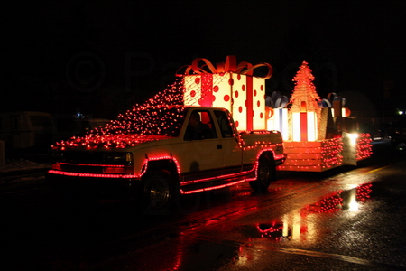
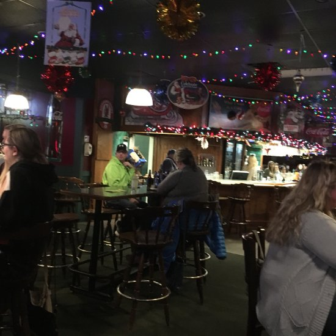

The people who stay around long enough here get to experience some of the most genuine small-town charm originating from the events that take place either on the spot or annually. As mentioned before, the “Night of Lights” is an event that takes place every December, a few weeks before Christmas. Businesses, schools, and really eccentric people will create floats that range from a sedan covered in string lights to a full scene on a flatbed with fully articulated animatronics waving to the crowds below! Not even to mention the lights and decor present on every business and residence all down Mainstreet!
It is merely one of the magical events that take place, as when Canada Day comes around, prepare yourself for some real fireworks, literally! What people do the rest of the time though would have to amount to going for a walk, getting a bite to eat, or getting a drink at McLennan’s Cocktails and Q’s off of Mainstreet. There are also bands and shows that you could go and watch there as well!